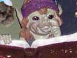

THE SEDUCTRESS OF THE OAK GROVES

Legend has it that, in the dawn of time, the son of Thunder and the daughter of Lightning lay together upon the floor of a holm oak forest. From their union were born the Mycos — soft, cotton-white beings. The Mycos attended the summit of the Three Kingdoms, presided over by Phoebus, the Great Provider. But Phoebus would only supply the Green-Robed ones. And so the Mycos were compelled to negotiate with the Rhizomes, the productive centres of the Green-Robed. Their principal task was to build multi-lane highways for the delivery of nitrate, phosphorus and other elements essential to the Rhizomes' production of carbon.
Each Winter, the Mycos issued their annual invoice and were paid promptly in Organic Matter. Thanks to this agreement, Mycos and Rhizomes managed to weather every crisis, proving that collaboration was far more profitable than competition — for had they chosen the Law of the Strongest, it would have led to the survival of just One. And once alone, singular, the One would have grown bored and perished too.
For the Mycos, the fruit of this collaboration gave rise to their most precious treasure, locked away in a sealed chest beneath the earth: the Black Pearl — the most seductive, luxurious and coveted being in the realm of aromas. First she seduced Slugs and Borers. Then she drew in Beetles, Flies and Spiders. Finally she tempted small and large mammals alike. But her greatest conquest was Man. So powerful was the Eros between them that the Black Pearl was invariably devoured whenever the long-awaited encounter took place. This nearly cost her existence, but some wise and good-hearted men realised in time and took care of the natural sanctuaries where the Black Pearl lived, or created gardens for her in many parts of France and Italy. In Spain, Black Pearl gardens can be found in La Rioja, Aragón, Navarra… We have chosen to tend the Natural Paradise of Somolinos. We invite you to come and discover it, and to help us look after it.
A RIDDLE
YOU ARE OF PURE BLACK BLOOD
YET NIGERIA IS NOT YOUR BIRTHPLACE
THOUGH YOU HIDE YOURSELF BENEATH THE EARTH
I SWEAR I'LL FIND YOU — BY NOSE!
 |
Andrés Donaire |